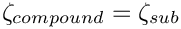
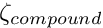
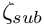
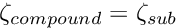
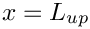
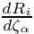
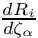

In an earlier example, we demonstrated how the MacroElement/Domain - based node-update procedure that we originally developed for problems with moving, curvilinear domain boundaries may also be used in fluid-structure interaction problems in which the position of the domain boundary has to be determined as part of the solution. We demonstrated that the driver code for the coupled multi-physics problem was a straightforward combination of the driver codes for the two constituent single-physics problems. The two key steps required to couple the two single-physics codes were:
- Recast the wall mesh to a
GeomObject, using theMeshAsGeomObjectclass. This class turns an existing solid mechanics mesh into a "compound"GeomObjectin which material points on the
wall are identified by their Lagrangian coordinate,  , which doubles as theGeomObject'sintrinsic coordinate,  .
- Use the "compound"
GeomObjectto represent the moving boundary of the fluid mesh. "Upgrade" the fluid elements (of typeFLUID_ELEMENT, say) to the "wrapped" versionMacroElementNodeUpdateElement<FLUID_ELEMENT>to allow the the node-update to be performed node-by-node, and to automatically evaluate the "shape derivatives" – the derivatives of the fluid equations with respect to the (solid mechanics) degrees of freedom that determine their nodal positions.
While the implementation of these steps is very straightforward, we pointed out that the resulting code was not particularly efficient as the fluid-node update is not as sparse as it could (should!) be: Since it is impossible to distinguish between the various sub-objects in the "compound" GeomObject, we can do no better than to assume the worst-case scenario, namely that the positional degrees of freedom of all SolidNodes in the wall mesh potentially affect the nodal position in all fluid elements. This dramatically increases the size of the elemental Jacobian matrices, and creates many nonzero entries in the off-diagonal blocks in the global Jacobian matrix.
Sparse algebraic node updates in FSI problems
To avoid this problem we need a node-update strategy in which the position of each fluid node is determined by only a small number of solid mechanics degrees of freedom. The algebraic node-update strategy discussed in the non-FSI version of the collapsible channel problem, provides an ideal framework for this, as it allows each node to update its own position, using a node-specific update function. Recall that in the AlgebraicMesh - version of the CollapsibleChannelMesh, each AlgebraicNode stored a pointer to the (single) GeomObject that represented the moving curvilinear boundary, and the Lagrangian coordinate of a reference point on this GeomObject. The node's node-update function then placed the node at a fixed vertical fraction on the line connecting the reference point on the "elastic" wall to a second reference point on the fixed lower channel wall. Furthermore, the "wrapped" element, AlgebraicElement<FLUID_ELEMENT>, automatically computes the "shape derivatives" by finite-differencing the fluid residuals with respect to the degrees of freedom stored in the GeomObject's geometric Data, just as in the case of the MacroElement - based node-update procedure.
If used in the form discussed in the earlier example, this methodology does not (yet!) improve the sparsity of the node update: The geometric Data of the "compound" GeomObject that represents the wall still contains the positional degrees of freedom of all of the mesh's constituent FSIHermiteBeamElements. This is wasteful because the position of a material point on the (discretised) wall depends only on the positional degrees of freedom of the element that this point is located in. The (costly-to-compute) derivatives with respect to all other solid mechanics degree of freedom are zero. We will therefore modify the node-update procedure as follows: Each AlgebraicNode stores a pointer to the FSIHermiteBeamElement that its reference point is located in. This is possible because FSIHermiteBeamElements are derived from the FiniteElement class which, in turn, is derived from the GeomObject class. In other words, the sub-objects of the compound MeshAsGeomObject are GeomObjects themselves. Their shape is parametrised by the FSIHermiteBeamElement's local coordinate,  , which acts as the (sub-)GeomObject's intrinsic coordinate, .
Given a pointer to a compound GeomObject, geom_obj_pt, say, and the intrinsic coordinate = zeta_compound of a point in that GeomObject, the function GeomObject::locate_zeta(...) may be used to determine a pointer, sub_obj_pt, to the sub-object that this point is located in, and the vector of intrinsic coordinates zeta_sub_obj of the point in this sub-object. This procedure is illustrated in this code fragment:
Here is an illustration of the relation between the various coordinates and GeomObjects:
We note that the GeomObject base class provides a default implementation for the GeomObject::locate_zeta(...) function as a virtual member function which returns the GeomObject's "this" pointer and sets  . Unless the function is overloaded in a specific derived class, the GeomObject therefore acts as its own sub-object. This is a sensible default as it ensures that (geom_obj_pt,  ) and (
) and (sub_geom_obj_pt,  ) always identify the same point, regardless of whether nor not the GeomObject pointed to by geom_obj_pt is a "compound" GeomObject.
The implementation
The implementation of the sparse node-update strategy requires only a few minor modifications to the AlgebraicCollapsibleChannelMesh, first discussed in the non-FSI example.
The AlgebraicCollapsibleChannelMesh
We construct the mesh by multiple inheritance, combining the already existing CollapsibleChannelMesh with the AlgebraicMesh base class:
The constructor calls the constructor of the underlying CollapsibleChannelMesh and then calls the private member function setup_algebraic_node_update() to initialise the data for the algebraic node update procedures. (The initialisation is implemented in a separate function so it can be called from additional mesh constructors that are not discussed here.) The destructor remains empty.
The function algebraic_node_update(...) is defined as a pure virtual function in the AlgebraicMesh base class and therefore must be implemented, whereas the virtual function update_node_update(...) is only required for refineable meshes and can remain empty.
The setup of the algebraic node update is very similar to that used in the non-FSI example discussed earlier. The main difference between the two versions of the mesh is that we use the function GeomObject::locate_zeta(...) to determine the sub-GeomObject within which the reference point on the wall is located. As discussed above, the default implementation of this function in the GeomObject base class ensures that the mesh can be used with compound and non-compound GeomObjects.
We start by determining the x and y-coordinates of the nodes and decide if they are located in the collapsible part of the mesh. (The positions of nodes that are located in the rigid upstream and downstream channel segments do not have to be updated; for such nodes we skip the assignment of the node-update data. See the discussion in the non-FSI example for details.)
Assuming that the wall is in its undeformed position (we'll check this in a second...), we determine the intrinsic coordinate of the reference point on the upper wall (taking the offset between  and
and  into account: The left end of the elastic wall is located at  and at
into account: The left end of the elastic wall is located at  and at  ), and identify the sub -
), and identify the sub - GeomObject within which the reference point is located.
Just to be on the safe side, we double check that the wall is still in its undeformed position:
Now we can create the node update data for the present AlgebraicNode. The node update function involves a single GeomObject: The (sub-)GeomObject within which the reference point on the upper wall is located.
As in the mesh used in the non-FSI example we store the x-coordinate of the reference point on the lower wall, the fractional height of the node, and its intrinsic coordinate in the (sub-)GeomObject on the upper wall. We also store the intrinsic coordinate of the reference point in the compound GeomObject (i.e. the Lagrangian coordinate of the reference point in the continuous beam). This will turn out to be useful in the refineable version of this mesh, to be discussed in the next example.
Finally, we create the node update information by passing the pointer to the mesh, the pointer to the GeomObject and the reference values to the AlgebraicNode.
The driver code
Since oomph-lib's various node update procedures use the same interfaces, changing the node update strategy from the Domain/MacroElement - based procedure, discussed in the previous example, to the procedure implemented in the AlgebraicCollapsibleChannelMesh, only requires minimal changes to the driver code. In fact, the changes are so trivial, that both versions are implemented in the same driver code, fsi_collapsible_channel.cc, using compiler flags to switch from one version to the other. If the code is compiled with the flag -DMACRO_ELEMENT_NODE_UPDATE the Domain/MacroElement - based node-update procedure, implemented in the MacroElementNodeUpdateCollapsibleChannelMesh is used, otherwise the code uses the AlgebraicCollapsibleChannelMesh, discussed above. Here is one of the few portions of the code where the distinction between the two versions is required: The access function to the "bulk" (fluid) mesh in the problem class.
Incidentally, the driver code also uses compiler flags to switch between Crouzeix-Raviart and Taylor-Hood elements for the discretisation of the Navier-Stokes equations. By default, Crouzeix-Raviart elements are used; Taylor-Hood elements are used if the code is compiled with with the flag -DTAYLOR_HOOD.
Results
The animations shown below illustrate the interaction between fluid and solid mechanics degrees of freedom in the computations with the algebraic node update. Comparison with the corresponding animations for the Domain/MacroElement - based procedures, shown in the earlier example demonstrates the greatly improved sparsity of the node update. With the algebraic node-update procedures, the residuals of the FSIHermiteBeamElements now only depend on the fluid degrees of freedom in the adjacent fluid elements and on the solid mechanics degree of freedom in the FSIHermiteBeamElements that affect the nodal position in these fluid elements.
Here is the corresponding animation for a discretisation with 2D Taylor-Hood elements. These elements have no internal Data but the pressure degrees of freedom are stored at the fluid element's corner nodes:
Finally, here is an animation that shows the (solid mechanics) degrees of freedom that affect the node-update of a given fluid node. The red square marker shows the fluid node; the green numbers show the number of the degrees of freedom at the SolidNodes that are involved that fluid node's node update. With the algebraic node update, the position of each fluid node is only affected by the solid mechanics degree of freedom in the FSIHermiteBeamElement that contains its reference point.
The improved sparsity leads to a very significant speedup compared to the MacroElement/Domain - based node update procedure.
Exercises
- Demonstrate that the dramatically improved execution speed achieved with the
AlgebraicCollapsibleChannelMeshis mainly due to the improved sparsity of the node update, achieved by using theGeomObject::locate_zeta(...)function.
Hint: You can either copy the basicMyAlgebraicCollapsibleChannelMeshin the file my_algebraic_collapsible_channel_mesh.h, developed for the non-FSI version of the collapsible channel problem, into the FSI driver code fsi_collapsible_channel.cc and use that mesh instead of theAlgebraicCollapsibleChannelMesh, or replace the line
this->Wall_pt->locate_zeta(zeta,geom_obj_pt,s);
in the functionAlgebraicCollapsibleChannelMesh<ELEMENT>::setup_algebraic_node_update()in collapsible_channel_mesh.template.cc by
this->Wall_pt->GeomObject::locate_zeta(zeta,geom_obj_pt,s);
thus bypassing the "sparsification".
- Explore how the speedup achievable with the algebraic node update procedure depends on the mesh resolution. A speedup by a factor of ten is typical for computations on the coarse mesh used for the validation runs; much more dramatic speedups tend to be obtained on finer meshes.
Source files for this tutorial
- The source files for this tutorial are located in the directory:
demo_drivers/interaction/fsi_collapsible_channel/
- The driver code is:
demo_drivers/interaction/fsi_collapsible_channel/fsi_collapsible_channel.cc
PDF file
A pdf version of this document is available.